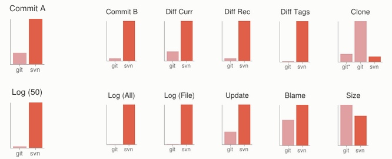
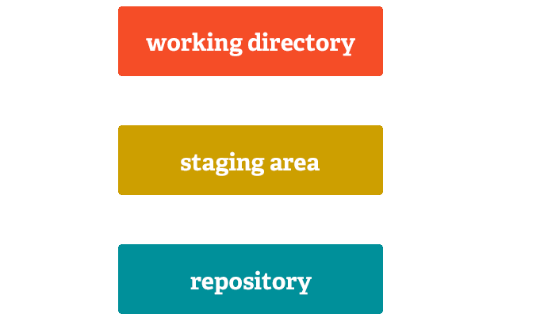

<me>
*nix Engineering
Swem
Automation
A little about me, and why I'm here presenting on something programmers typically do.
*nix Engineering
In Swem git is used to manage and deploy 2 very large applications, both with
upstream changes that are merged in with heavy localization and customization.
Automation
I'm a typical engineer. Lazy and don't like to repeat myself
I like to automate things - makes things easily repeatable
Makes the mantra - Automate all the things
We used a popular tool known as Puppet that stores infrastructure
definitions as code - this lets us version/change control our infrastructure.
Infrastructure as code means we can deliver/replicate our infrastructure outside
the traditional datacenter.
Allows us to scale by building as machines as we need quickly and in an automated way —
a true cloud architecture (NIST Standard 800-145).
Vagrant allows you to run parts of the infrastrucutre on your desk for development/testing
Makes development and testing much simpler — Allows devs to test like they're in the datacenter
Allows for better/more versatile testing of the infrastructure, and what it runs by everyone
<me>
*nix Engineering
Swem
Automation
</Me>
All of our Linux systems are at least partially managed by Puppet.
Working on the other capabilities now to make everything easier.
Enough about me and what I do - time to talk about git
What is Git?
Git is a free and open source distributed version control system designed to handle
everything from small to very large projects with speed and efficiency.
What is Git?
Git is a free and open source distributed version control system designed to handle
everything from small to very large projects with speed and efficiency.
Linux community dumped proprietary BitKeeper after some disagreement. Instead of using something pre-existing
(carrying along problems) they redsigned with some interesting design criteria - eliminating every existing product:
Patches <= 3 seconds to apply
CVS is what not to do; if in doubt - make the opposite decision
Distributed
Strong safeguards against corruption
Took 2 months to write - initially merging 6.7 patches/second - or ~20x faster than the original goal
Has been managing Linux for just over 8 years
What is Git?
Git is a free and open source distributed version control system designed to handle
everything from small to very large projects with speed and efficiency.
In git, everybody has everything - including the full history.
The linux kernel (585M source) is 1.5GB with history (>400k commits)
What is Git?
Git is a free and open source distributed version control system designed to handle
everything from small to very large projects with speed and efficiency .

A few graphs comparing git to subversion.
Smaller is better.
Graphs on the left make sense considering the design differences:
Distributed
Everybody has everything
Why git?
Fast
Versatile
Widely Used
Fast - not a lot of overhead (computing or human) to make it go
Versatile - can be used for lots of things - from configuration to code
Widely Used by places like us — Universities, Ellucian — Google, Facebook, and other
large companies - also GitHub
As of January 2013 GitHub had >3M users and > 5M repositories
What git isn't
Drop in replacement for any other SCM
Server for sharing code
Not a drop in replacement for any other workflow or interface.
Git itself isn't a server to make everything centralized - but a lot of these have been made.
Getting Git
http://git-scm.com
or
Most package managers (apt, yum, brew, etc.)
Getting Started
$ cd projects/my_directory
$ git init
Initialized empty Git repository in /home/phil/projects/my_directory/.git
$ cd projects
$ git clone http://github.com/pcfens/git-demo.git
Cloning into 'git-demo'...
remote: Counting objects: 3, done.
remote: Compressing objects: 100% (2/2), done.
remote: Total 3 (delta 0), reused 0 (delta 0)
Receiving objects: 100% (3/3), done.
$ cd git-demo/
2 ways to start a project:
Initializing a new project
Cloning an existing project
Both are very fast - using the kernel example - 3 minutes to download and make usable.
Files you see and edit
Git has 3 areas changes can be in
First is the working directory
Changes ready to be committed
Staging area is for files, or parts of files (chunks) to be staged before commiting them.
Let's you commit parts of a file for logical commit separation
Can be ignored, but generally a bad practice unless you're sure.
Permanent change history
Permanent is permanent - rolling back to an old state is a new commit on top of the exisiting history.

The command git add adds all changes to the staging area.
git add -p <filename> lets you stage individual chunks.
Make Changes
Add or remove something from index.html
# Move changes into staging
$ git add index.html
# Commit the changes
$ git commit -m "Made a local change"
Using our clone from earlier we can make changes to our project
After making the change we'll commit it to our repository.
Benefits of Git
Lots of copies
Working Directory is the Repository
Commit Staging
Integrity Checking
Lightweight Branching
Lots of copies - everyone is a backup - nothing to go down
Work in the repository - lets you test as you go without having to do anything special.
Commit staging (should) mean the end to commits not always making sense when compared to code
Integrity Checking
Every commit is cryptographically signed - depends on everything before it.
Lightweight Branching
Branches are fast - and a big part of what makes git awesome.
Branching
Easy to switch between
Feature/topic branches
Merge branches into each other
Disposable
Public or Private
Fast branch switching - it's really fast and easy - will demonstrate in a few minutes
Feature/topic branches - not uncommon to create a branch just for adding a feature or fixing a bug
After you're happy with a branch - you merge it into your mainline with a single command
Branches are disposable with one command - and it doesn't leave anything laying around
Branches can be public (live on a server) or private. They can be called something different
locally than they're called on the server. Working on something you're not ready to share - no problem
Demo
Branching
Maintaining Local Customizations
Benefits of Git
Lots of copies
Working Directory is the Repository
Commit Staging
Integrity Checking
Lightweight Branching
Widely Used
Hooks into CI Systems
Deploy Directly from SCM
Talked a lot about the obvious features - but there are some non-obvious too
Widely used - tons of support - Lots of google-ability
Hooks directly into CI systems - Jenkins, Travis, etc. - if you write tests it boosts confidence
Direct deployment - no more having to export and deliver to ops for deployment
Mention submodules